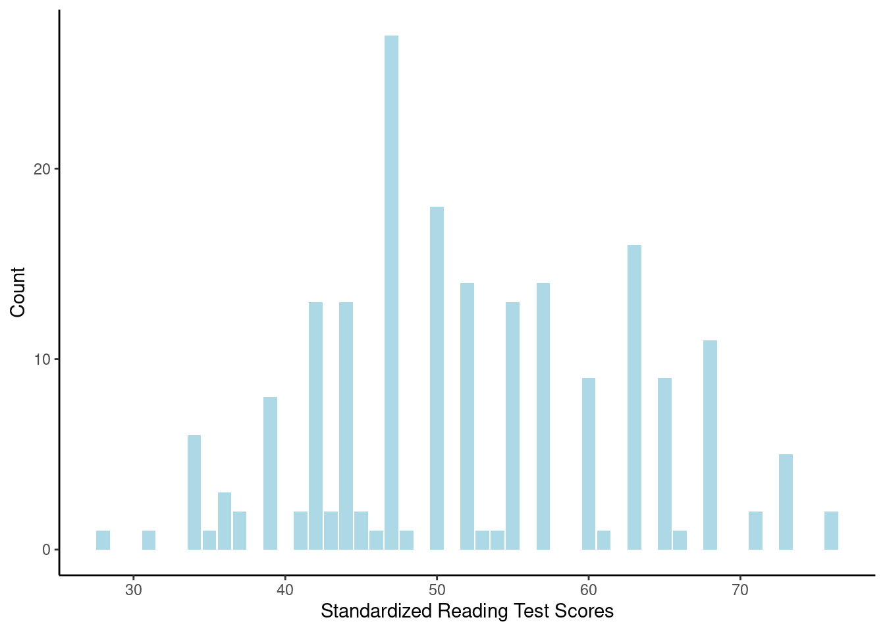

In this study, we examined a set of potential factors that may influence high school students’ standardized test scores. Our goal was to better understand how certain demographic characteristics and academic performance measures relate to one another—particularly how they may predict writing scores. Specifically, we explore the predictive power of familial socioeconomic status, types of school attended, types of program enrolled in, and standardized reading scores on the standardized writing scores of high school students. To assess the relative importance and predictive accuracy of these variables, we conducted k-fold cross validation to compare the performance of two linear models alongside variable selection. This approach allowed us to evaluate model generalizability and identify which factors most consistently contribute to writing performance. Our findings from this analysis may offer insights into patterns of educational achievement among High School students and contribute to larger discussions about equity in education.
Data
The data used in this project comes from the hsb2 dataset, a random sample of size 200 published by UCLA Institute for Digital Research & Education Statistical Consulting. The sample was drawn from the 1,100 high school students who participated in the “High School and Beyond” survey conducted in 1980 by the National Center for Education Statistics. The purpose of this survey was to better understand what factors of the educational system influence the educational and occupational performance of students before and after graduation. The dataset includes variables such as gender, race, socioeconomic status, and standardized test scores in reading, writing, math, science, and social studies. For this analysis, we focused on four predictors: socioeconomic status, type of school attended (public or private), type of academic program enrolled in (general, academic, or vocations), and reading scores, and one response variable, writing scores.
hsb2=read.csv("hsb2.csv")head(hsb2)
id gender race ses schtyp prog read write math science socst
1 70 male white low public general 57 52 41 47 57
2 121 female white middle public vocational 68 59 53 63 61
3 86 male white high public general 44 33 54 58 31
4 141 male white high public vocational 63 44 47 53 56
5 172 male white middle public academic 47 52 57 53 61
6 113 male white middle public academic 44 52 51 63 61
Data Cleaning
Data cleaning was the first step of our study. All variable names were easy to use incode and all quantitative variables had the correct type, thus none of these variables needed to be changed. However, when we checked the variable type for our categorical variables, we saw they were type ‘character’; we then changed them to type factor.
ses schtyp prog
"character" "character" "character"
#Changing them to type factorhsb2$ses =as.factor(hsb2$ses)hsb2$schtyp =as.factor(hsb2$schtyp)hsb2$prog =as.factor(hsb2$prog )hsb2$gender=as.factor(hsb2$gender)
In order to look for missing values, we counted the original number of rows in our dataset and then counted again after filtering all NAs from the data. We started off with 200 rows and after filtering the dataset, 200 rows remained, thus the data contained no missing values.
nrow(hsb2) #checking our starting number of rows
[1] 200
# Removing missing data pointshsb2= hsb2 %>%filter(!is.na(read), !is.na(write),!is.na(ses),!is.na(schtyp),!is.na(prog))nrow(hsb2)
[1] 200
hsb2 %>%ggplot(aes(x = read)) +geom_bar(fill ="lightblue") +theme_classic() +labs(x ='Standardized Reading Test Scores', y ='Count')

hsb2 %>%ggplot(aes(x = write)) +geom_bar(fill ="lightblue") +theme_classic() +labs(x ='Standardized Writing Test Scores', y ='Count')
# Checking for any empty stringshsb2 %>%ggplot(aes(x = ses)) +geom_bar(fill ="lightblue") +theme_classic() +labs(x ='Socioeconomic status', y ='Count')
Our research question we are trying to find is how are writing scores affected by multiple variables of the high school senior. The variables we are going to look at is reading scores, socioeconomic status, school type, and program type.
Let’s first review our quantitative variables. For our standardized writing scores, our mean score is around 52.77 with range from 31 to 67. Our standard deviation is rounded to 9.5. For our standardized reading scores, our mean is 52.23, with range from 28 to 76. Our standard deviation for these scores is rounded to 10.3. We have 200 observations.
summary(hsb2$write)
Min. 1st Qu. Median Mean 3rd Qu. Max.
31.00 45.75 54.00 52.77 60.00 67.00
sd(hsb2$write)
[1] 9.478586
summary(hsb2$read)
Min. 1st Qu. Median Mean 3rd Qu. Max.
28.00 44.00 50.00 52.23 60.00 76.00
sd(hsb2$read)
[1] 10.25294
In terms of categorical variables, we can see that for socioeconomic status for students, the majority of them, 47.5%, are in the middle class. For school type, most of the senior students, 84%, are in public school. And finally for program type, most seniors, 52.5% are in academic program.
prog n percentage
1 academic 105 52.5
2 general 45 22.5
3 vocational 50 25.0
Visual Summary
We have already seen some plots of our data in our data cleaning section but I will also be providing a bit more to visualize our data and the relationships between each other. Starting with our response variable, standardized writing scores.
ggplot(hsb2, aes(y=write)) +geom_boxplot(fill ="lightblue") +labs(title ="Standardized Writing Scores", y ="Count")+theme_classic()
Earlier in the data cleaning, we showed data visualization for each variable, now let us compare them to our response variable.
The first statistical test we conducted was K-fold cross validation. Cross validation is a frequently used technique for evaluating the performance of predictive models by assessing how well they are able to generalize to data that is independent of the training set. In K-fold cross validation, this is done through randomly partitioning the dataset into k approximately equal-sized groups or folds. The model is trained on k-1 folds and then tested on the remaining fold. This process is repeated k times so that each fold serves as the test set exactly one time. Mathematically, K-folds cross validation follows this procedure,
Divide the data into k partitions of approximately equal size.
Repeated the following for each group j (j=1,2,…,k)
assign group j to the test set.
Fit a model on the remaining k-1 partitions or the training set.
Use this model to predict the response for all observations in group j.
Calculate the needed error metric for group j. In our case we used the MSE
Combine this information to estimate model quality
\[CV_{(k)}=\frac{1}{k}\sum_{j=1}^{k}MSE_J\]
In our study, we use the MSE as our error metric. The MSE penalizes larger errors more heavily than other metrics. This is important for our data because we are predicting test scores and thus making large errors in our prediction can have large impacts. One large disadvantage of using the MSE would be that it is sensitive to outliers. Since there may be some students whose test scores are considered outliers, this may influence the MSE more heavily than other metrics.
The goal of cross validation is to estimate how well a model will perform on independent datasets to prevent overfitting. Overfitting can cause harmful biases that may be causing patterns in the training data to be generalized to future data, ultimately further perpetuating inaccurate, and sometimes dangerous information. This is especially important when conducting educational research as overfitting can lead to the spread of misleading and sometimes dangerous information that could impact a large proportion of the younger population. Cross validation provides more fair and accurate prediction of the population of interest.
In our study, we analysed the CV MSE of the following models using three different values of k. The models were as follows,
In order to retrieve the MSE for all folds in our cross validation we must first unnest the cross validation to obtain each individual fold and the RMSE. We then squared the RMSE to obtain the MSE for each individual fold, and following the k-fold cross validation procedure, averaged the MSE for each model. These MSE values are what is printed below.
# Get fold by fold and pull out the rmse for each. m1_rmse=model1_cv %>%unnest(.metrics) %>%filter(.metric=="rmse")m2_rmse=model2_cv %>%unnest(.metrics) %>%filter(.metric=="rmse")# Sqaure the found RMSE valuesm1_mse=m1_rmse$.estimate^2m2_mse=m2_rmse$.estimate^2# Average the MSE values across the 10 folds for each modelm1_cv_mse=(1/10)*sum(m1_mse)m2_cv_mse=(1/10)*sum(m2_mse)# Print the CV MSE for both models. m1_cv_mse
[1] 40.57728
m2_cv_mse
[1] 58.62453
# Summarize RMSE for model 1m1_summary <- m1_rmse %>%summarise(model ="Model 1",mean_rmse =mean(.estimate),sd_rmse =sd(.estimate),mean_mse =mean(.estimate^2),sd_mse =sd(.estimate^2) )# Summarize RMSE for model 2m2_summary <- m2_rmse %>%summarise(model ="Model 2",mean_rmse =mean(.estimate),sd_rmse =sd(.estimate),mean_mse =mean(.estimate^2),sd_mse =sd(.estimate^2) )# Combine into one summary tablemodel_metrics_summary <-bind_rows(m1_summary, m2_summary)# Display the tablemodel_metrics_summary
# A tibble: 2 × 5
model mean_rmse sd_rmse mean_mse sd_mse
<chr> <dbl> <dbl> <dbl> <dbl>
1 Model 1 6.30 0.986 40.6 12.2
2 Model 2 7.60 0.968 58.6 14.9
We found that the CV MSE for model 1 is, 40.577 while the CV MSE for model 2 is 58.625.
Next, we conducted a leave one out cross validation of the two models.
set.seed(1376987)k=nrow(hsb2)-1# Performing K=199 CVmodel1_loocv = lm_spec %>%fit_resamples( write ~ gender + ses + schtyp + prog + read + math + science + socst,resamples =vfold_cv(hsb2,v=k),metrics =metric_set(mae, rmse) )model2_loocv = lm_spec %>%fit_resamples( write ~ ses + schtyp + prog + read,resamples =vfold_cv(hsb2,v=k),metrics =metric_set(mae, rmse) )# Calculated the CV MSE for model 1 m1_loo_rmse=model1_loocv %>%unnest(.metrics) %>%filter(.metric=="rmse")m1_loo_mse=m1_loo_rmse$.estimate^2m1_loo_mse=(1/k)*sum(m1_loo_mse)# Calulate the CV MSE for model 2m2_loo_rmse=model2_loocv %>%unnest(.metrics) %>%filter(.metric=="rmse")m2_loo_mse=m2_loo_rmse$.estimate^2m2_loo_mse=(1/k)*sum(m2_loo_mse)# Print the CV MSE for both models. (m1_loo_mse)
[1] 39.32325
(m2_loo_mse)
[1] 57.82414
We can see that the 199-Fold CV MSE for Model 1 is 39.323, and the 199-fold CV MSE for Model 2 is 57.824. This shows that Model 1 has the lowest CV MSE when k=199.
Finally, we implemented a 75-fold Cross Validation. Since we tested K=10 and K=199, this provides information into the CV-MSE when k is between the two previously found values.
set.seed(239762)# Performing k=75 CV on both modelsmodel1_75 = lm_spec %>%fit_resamples( write ~ gender + ses + schtyp + prog + read + math + science + socst,resamples =vfold_cv(hsb2,v=75),metrics =metric_set(mae, rmse, rsq) )model2_75 = lm_spec %>%fit_resamples( write ~ ses + schtyp + prog + read,resamples =vfold_cv(hsb2,v=75),metrics =metric_set(mae, rmse, rsq) )# Calculated the CV MSE for model 1 m1_75_rmse=model1_75 %>%unnest(.metrics) %>%filter(.metric=="rmse")m1_75_mse=m1_75_rmse$.estimate^2m1_75_mse=(1/75)*sum(m1_75_mse)# Calulate the CV MSE for model 2m2_75_rmse=model2_75 %>%unnest(.metrics) %>%filter(.metric=="rmse")m2_75_mse=m2_75_rmse$.estimate^2m2_75_mse=(1/75)*sum(m2_75_mse)# Print the CV MSE for both models. (m1_75_mse)
[1] 39.88911
(m2_75_mse)
[1] 57.52963
We find that the 75-Fold CV MSE for model 1 is, 39.889, while the 75-Fold CV MSE for model 2 is 57.530.
Notice that for Model 1, when k=199, the CV error is the smallest. For model 2, we notice that the CV error is smallest for k=75. Both models seem to perform better when K is larger than 10. Based on the all three calculated CV tests, we see a clearly that the CV MSE for Model 1 is consistently lower than that of Model 2. Due to this persistent results, we will select Model 1 as our final model.
Now, we used backward stepwise selection to select our model and which variables are efficient for us. We build a model with all p possible predictors and then we repeat the following until only one predictor remains:
Remove the 1 predictor that increases the MSE/MAE by the least
Build a model with the remaining predictors.
We then pick the best model. This method helps us balance accuracy and ensuring we avoid overfitting.
#Modellm_spec =linear_reg() %>%set_engine("lm") %>%set_mode("regression")#Full Model lm_spec %>%fit(write ~ gender + ses + schtyp + prog + read + math + science + socst, data = hsb2) %>%tidy() %>%mutate (p.value =round(p.value, 4))
#Model Selection model_8predictors = lm_spec %>%fit_resamples(write~ gender + ses + schtyp + prog + read + math + science + socst, resamples =vfold_cv(hsb2, v =10), metrics =metric_set(mae))model_7predictors = lm_spec %>%fit_resamples(write~ gender + ses + schtyp + prog + read + math + socst, resamples =vfold_cv(hsb2, v =10), metrics =metric_set(mae))model_6predictors = lm_spec %>%fit_resamples(write~ ses + schtyp + prog + read + math + socst, resamples =vfold_cv(hsb2, v =10), metrics =metric_set(mae))model_5predictors = lm_spec %>%fit_resamples(write ~ ses + schtyp + prog + read + math, resamples =vfold_cv(hsb2, v =10), metrics =metric_set(mae))model_4predictors = lm_spec %>%fit_resamples(write ~ ses + schtyp + prog + read, resamples =vfold_cv(hsb2, v =10), metrics =metric_set(mae))model_3predictors = lm_spec %>%fit_resamples(write ~ ses + prog + read, resamples =vfold_cv(hsb2, v =10), metrics =metric_set(mae))model_2predictors = lm_spec %>%fit_resamples(write ~ ses + read, resamples =vfold_cv(hsb2, v =10), metrics =metric_set(mae))model_1predictors = lm_spec %>%fit_resamples(write ~ read, resamples =vfold_cv(hsb2, v =10), metrics =metric_set(mae))#Resultsresults =bind_rows( model_1predictors %>%collect_metrics()%>%mutate(predictors =1),model_2predictors %>%collect_metrics()%>%mutate(predictors =2),model_3predictors %>%collect_metrics()%>%mutate(predictors =3),model_4predictors %>%collect_metrics()%>%mutate(predictors =4),model_5predictors %>%collect_metrics()%>%mutate(predictors =5),model_6predictors %>%collect_metrics()%>%mutate(predictors =6),model_7predictors %>%collect_metrics()%>%mutate(predictors =7),model_8predictors %>%collect_metrics()%>%mutate(predictors =8))#Plot them outggplot(results %>%filter(.metric =="mae") , aes(x = predictors, y = mean)) +geom_point(color ="lightblue") +geom_line(color ="lightblue") +theme_classic()+labs(title ="MAE vs Num of Predictors", x =" Num of Predictors", y="MAE")
Based on our graph, we can see that our lowest MAE is with all eight of our predictors. As we continued to remove a predictor each time, our MAE increased which means that all variable are significant and contribute to our model and response variable.
Conclusion
After our K-Fold Cross-Validation method and backward stepwise selection method, they gave us the both results and we determined that Model 1 is the best. Model 1, includes all eight predictors (gender, ses, schtyp, prog, read, math, science, socst) had the lowest MAE, mean absolute error, with both methods.
Model 1 is able to provided the most significant model for standardized writing scores as it shows a comprehensive view of the student’s academic and demographic statistics. They all contribute to a students’ writing scores which is what we are testing. We originally picked the four predictive variables (ses, schtyp, prog, and read) because we believed those were the only significant ones.
However, through statistical analysis, we saw that additional variables (math, science, gender) help explain variance in the standardized writing scores. To conclude, through analysis we cannot accurately predict the student’s writing performance by only a subset of variables. Based on our methods, we need all variables which lets us know the students’ full demographics and academic statistics, which helps us accurately predict student’s writing scores to the best we can.
Source:
National Center for Education Statistics - Statistical Consulting. (n.d.). High School & Beyond (HS&B) - overview. High School & Beyond (HS&B) - Overview. https://nces.ed.gov/surveys/hsb/